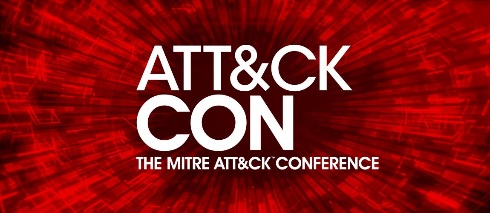

感谢所有使ATT和CKcon取得成功的热情和参与。超过250人在MITRE麦克莱恩校区亲自参加了我们的第一场活动，这次活动现场直播超过1000人。我们的视频已被观看超过10,000次，社区内有很多精力来不断改进ATT和CK框架。请继续观看并分享这些演示文稿。
ATT＆CKcon 2018演示文稿
点击下面的标题，获取视频和幻灯片的摘要和外部链接。
1.推进Infosec，主题演讲 （John Lambert，微软）
In this presentation at MITRE ATT&CKcon, John Lambert, Distinguished Engineer and General Manager of the Threat Intelligence Center at Microsoft, presents “Advancing InfoSec: Towards an Open, Shareable, Contributor-Friendly Model of Speeding InfoSec Learning.” The talk details a model where infosec know-how is more organized, community sourced, vendor neutral, and shareable by all defenders. It includes a call for the community to publish mappings of ATT&CK techniques used by groups.
2.我们是如何到达这里的？ （Blake Strom和Richard Struse，MITRE）
Richard Struse, MITRE’s Principal Strategist for Cyber Threat Intelligence, interviews Blake Strom, MITRE’s principal ATT&CK engineer, on how MITRE ATT&CK was developed, its current state, and future direction.
3.操作ATT和CK （Bryson Bort，SCYTHE）
How do you turn a theoretical framework into something useful? ATT&CK provides a common language while allowing for the development of sophisticated defenses.
4.解决痛苦金字塔：实施ATT和CK （Emma MacMullan和Justin Sherenco，通用电气）
Operationalizing the ATT&CK framework has enabled GE to deploy custom detection to evolving threat actor behaviors. By leveraging an in-house developed tool called TIAMAT (Tactical Intelligence Adversary Mapping and Analysis Tool) the ATT&CK framework is incorporated into an end-to-end operational process from intelligence collection to customized detection deployment. The designing of this new operational process is examined, and a use case presented of how examining a historical incident led to a new method of deploying detection based on ATT&CK and the detection of previously undiscovered activity. There is also a demo that walks the audience through the end-to-end process and explains TIAMATs capabilities.
5. ATT＆CK：所有事情 （Neelsen Cyrus和David Thompson，USAA）
USAA has utilized the ATT&CK framework as a unique means to map their current detection infrastructure and assess their ability to defend against the most relevant threats to their network. In this presentation they share some lessons learned during their journey with ATT&CK leading to identified best practices for workflow integration through team composition and custom tool development.
6.使用ATT和CK进行敏捷持续改进 （Matthew Stiak，Delta Dental和Jason Sinchak，Level Nine Group）
Organizations implementing SOC/IR with limited resources confront two issues: prioritization and measurement. Any successful SOC/IR implementation must have a robust way to prioritize content development and technology investment, and measurements that reflect the effectiveness of the investments to drive the next round of prioritization. Organizations can maximize their return on investment by using MITRE ATT&CK to focus resources on repeatable behaviors and provide a simple structure to reporting how well the organization can detect, block, or respond to those behaviors. During this talk security testing and operations experts Matt Stiak and Jason Sinchak share their thoughts on how to operationalize a continuous improvement and measurement framework based on MITRE ATT&CK, as well as some early results from their implementation of that framework.
7.供应商小组讨论 （Ed Amoroso，主持人）
Panelists:
8. VCAF: Expanding the ATT&CK Framework to cover VERIS Threat Action Varieties (Alex Pinto, Verizon)
The Vocabulary for Event Recording and Incident Sharing (VERIS) is a set of metrics designed to provide a common language for describing security incidents in a structured and repeatable manner. VERIS has been the base analysis framework for supporting the Verizon Data Breach Investigations Report (DBIR) since its inception. However, as organizations work to interpret the richness of information present on the DBIR to a more tactical level, the Threat Action Varieties available on VERIS fail to capture the detail present on the incidents recorded. This talk presents the Verizon Common Attack Framework (VCAF), an effort from the Security Data Science team and the DBIR team in Verizon to expand and map the ATT&CK framework in alignment with the DBIR Threat Action Varieties to provide this much-sought level of granularity in recording and analyzing recorded breaches. Additionally, this talk describes possible outcomes when this data is available and organized as such. Examples include applying DBIR-inspired attack vector analytics upon ATT&CK layer information, effectively identifying optimal control choke points on the attack graphs according to specific industries covered by the DBIR.
9. Playing Devil’s Advocate to Security Initiatives with ATT&CK (David Middlehurst, Trustwave)
This talk presents a case study which demonstrates that we should consider the knowledge and wisdom contained within ATT&CK in all organizational security initiatives to make sure by fixing one thing we have not just created an opportunity. The presentation shows how to leverage the analysis and classification of APT tactics and procedures (TTP) to guide research into new and novel techniques, specifically focusing on exfiltration and command and control. DNS over HTTPS (DoH) aims to increase user privacy and security by preventing eavesdropping and manipulation of DNS data by man-in-the-middle attacks. Major web browsers such as Firefox are considering its implementation by default. But what could this possibly mean for exfiltration and command and control? This session provides an end-to-end demo that shows DoH being implemented to provide full command and control in a popular attack simulation framework and discusses associated mitigations.
10. From Red VS Blue to Red Loves Blue (Olaf Hartong and Vincent Van Mieghem, Deloitte)
This session discusses Deloitte’s purple teaming approach which is using ATT&CK as a guiding principle to help both teams improve. This session shows how this works in a customer scenario, how to scope that scenario, how to plan the scenario and choose the various TTPs to be covered to how we assist the customers blue team in understanding the TTPs and helping them design detective capabilities for them. When the Blue Team is able to connect the dots from offensive activities in the network and what they see in their logs, rewalls, SIEMs, etc. they have the ability to fully understand what adversaries do and what the TTP’s of attackers actually look like if they are active in their network. It’s much easier to find the needle in the haystack if you know there is a needle to find to begin with. Purple teaming is providing this pointy needle, used to accelerate the Blue Team.
11. Helping Your Non-Security Executives Understand ATT&CK in 10 Minutes or Less (Elly Searle, CrowdStrike)
ATT&CK is an incredibly valuable framework for describing and analyzing what’s happening in your environment. Sometimes security professionals not only need a way to understand, but also need a way to clearly articulate to non-security leadership to gain support and investment in needed resourcing. Using UX design methods, CrowdStrike came up with a mental model and more conversational terms to help anyone quickly parse the big picture.
12. ATT&CK as a Teacher (Travis Smith, Tripwire)
ATT&CK is valuable for those of us who are heads down in security day in and day out. But what about using ATT&CK to each college interns about security? This presentation details how Tripwire used ATT&CK to build- out a new training regimen for summer interns. By going through and finding quick wins, Tripwire’s interns were actively engaged in learning about security. The detailed break downs of ATT&CK were greatly beneficial in helping teach security concepts to those who were not yet familiar with them. This session shows the program details and how you might be able to adapt it to your requirements.
13. Detection Philosophy, Evolution & ATT&CK (Fred Stankowski & Travis McWaters, Pepsico)
This lightning talk is a brief discussion around how PepsiCo is managing their ‘detection catalog’ and how it maps and is enhanced by the MITRE ATT&CK framework.
14. Decision Analysis Applications in Threat Analysis Frameworks (Emily Shawgo, PNC)
In the modern age, all organizations face threats from various types of cyber attacks. Although great strides have been made to consider human factors in cybersecurity and to become more proactive in threat analysis, security is still generally a reactive, technical field. The research presented in this talk seeks to develop a framework which adapts the existing MITRE ATT&CK framework to look at attacks in a less linear, more human-centered framework that focuses on the capabilities and decisions of the threat actor. The framework approaches threat analysis from a binary assessment of success vs. failure in order to see the entire attack and consider the potential for a number of methods and attempts made in a single attack. A detailed methodology and sample charts are included for a reference and a starting point in developing one’s own personalized charts, and recommendations are made for ways to integrate this methodology into the risk management process.
15.建立原子测试计划 （Brian Beyer，Red Canary）
Red Canary’s applied research team built the Atomic Red Team project based on a simple idea: encourage security teams to test their systems. Leveraging MITRE ATT&CK, the series of small tests can be combined into chains to help teams gain insight into gaps in their security program at all levels. This talk describes how to use Atomic Red Team and how MITRE ATT&CK is leveraged to write the tests.
16.使用ATT和CK 搞砸安全计划的5种方法 （Kyle Rainey，Red Canary）
Over the past year there has been a significant uptick in adoption of MITRE ATT&CK. Adoption of a common language and taxonomy for adversarial tactics and techniques comes with a few unspoken traps. This talk is to bring awareness to the pitfalls of implementing and adopting any variation of MITRE ATT&CK and how you can avoid falling for them.
17. ATT＆CK + OSQuery =爱 （Scott Lundgren，Carbon Black）
MITRE ATT&CK is cool and it's open, with a heavy emphasis on how attackers behave on the endpoint. OSQuery is cool and it's open, with a heavy emphasis on endpoint visibility. This talk focuses on an open-source extension to OSQuery that provides a free, repeatable mechanism to identify and detect ATT&CK techniques.
18. ATT＆CK对200份混合分析提交的评论 （James Lerud，Verodin）
How can you consistently categorize Techniques a given piece of malware uses? The answer to this question could be provided by sandbox vendors. CrowdStrike has embraced ATT&CK by including Technique detection in their public Hybrid-Analysis reports. This talk reviews the submission results of 100 malicious and 100 benign executables.
19.从技术到检测 （Paul Ewing和Ross Wolf，Endgame）
This session is a practical guide for a rapid prototyping of ATT&CK-based analytics – from technique to detection.
20.猎人ATT和CKing的数据 （Roberto Rodriguez，SpecterOps和Jose Luis Rodriguez，学生）
With the development of the MITRE ATT&CK framework and its categorization of adversary activity during the attack cycle, understanding what to hunt for has become easier and more efficient than ever. However, organizations are still struggling to understand how they can prioritize the development of hunt hypothesis, assess their current security posture, and develop the right analytics with the help of ATT&CK. Even though there are several ways to utilize ATT&CK to accomplish those goals, there are only a few that are focusing primarily on the data that is currently being collected to drive the success of a hunt program. This presentation shows how organizations can benefit from mapping their current visibility from a data perspective to the ATT&CK framework. It focuses on how to identify, document, standardize and model current available data to enhance a hunt program. It presents an updated ThreatHunter-Playbook, a Kibana ATT&CK dashboard, a new project named Open Source Security Events Metadata known as OSSEM and expands on the “data sources” section already provided by ATT&CK on most of the documented adversarial techniques.
21.通过ATT和CK框架的镜头分析有针对性的入侵 （Karl Scheuerman，CrowdStrike）
The security community is quickly adopting the MITRE ATT&CK matrix as a framework for understanding and analyzing targeted intrusions. However, one of its potential limitations is a lack of detailed historical intrusion data for developing accurate and thorough ATT&CK-based threat modeling. Crowdstrike’s Falcon OverWatch threat hunting team analyzes adversary behavior on a regular basis. The amount of OverWatch's malicious intrusion data is significant given the valuable telemetry delivered by Falcon's endpoint technology. As a result, CrowdStrike has amassed a rich data library of malicious activity that can be applied to the ATT&CK model. The OverWatch Strategic Counter-Adversary Research (SCAR) team has now evaluated all OverWatch intrusion data since January 1, 2018 through the lens of the ATT&CK framework. This presentation presents these findings and highlights cases of unique adversary TTP use. The results of this analysis will provide a baseline from which CrowdStrike can better identify changes in threat actor TTP trends moving forward. In addition, the presentation discusses limitations in this type of research.
22.最终用户小组讨论 （由Katie Nickels，MITER主持）
Panelists:
23. Sofacy 2018和Adversary Playbook （Robert Falcone，Palo Alto Networks）
Unit 42 researches threat activity and publishes detailed reports on attack campaigns launched by these adversaries. One of these adversaries, known as Sofacy, has been carrying out attack campaigns on high profile targets for many years and has continued into 2018. To understand how to defend against these threats, an analyst has to read our reports, process them and mentally map them to their defenses. In most cases we expect readers just "block" all of the indicators we include in the report and assume they are covered. Last year we started using ATT&CK to codify the techniques we observed, linking those techniques to indicator patterns and encoding them into STIX 2 objects, with the goal of creating something that a defender can use to answer the question: "How am I defending against this adversary?" We call these documents, "Adversary Playbooks" as they contain our best approximation of how the adversary launches their attacks. This talk describes the concept of Adversary Playbooks, as well as provides an overview of the attack campaigns Unit 42 has attributed to the Sofacy group in 2018. It uses the discussed attacks to show how these playbooks are constructed and explain some of the challenges of incorporating ATT&CK and STIX 2 together for this purpose.
24.从自动化到分析：模拟对手以创造更好的检测 （David Herrald和Ryan Kovar，Splunk）
Security teams have more detection tools at their disposal than ever before, yet most are still struggling to find even the most basic malicious activity occurring in their environments. Building effective detection analytics requires realistic data and the ability to iterate quickly in a rapid analytic development cycle. This talk introduces a full lifecycle attack simulation and analytics development environment featuring the MITRE ATT&CK framework and the Atomic Red Team project using Splunk and Splunk Phantom mapped to an imaginary APT group, Taedonggang. It focuses on how security teams can use such a system to rapidly develop and share new detection analytics. Links to all components referenced in the talk are provided, including a cloud-based dataset that can act as a playground for users who want to see the results of the activity.
25.与MITRE ATT和CK一起使用博弈论 （Matt Summers和Nick Dunn，NCC Group）
In this presentation at MITRE ATT&CKcon, John Lambert, Distinguished Engineer and General Manager of the Threat Intelligence Center at Microsoft, presents “Advancing InfoSec: Towards an Open, Shareable, Contributor-Friendly Model of Speeding InfoSec Learning.” The talk details a model where infosec know-how is more organized, community sourced, vendor neutral, and shareable by all defenders. It includes a call for the community to publish mappings of ATT&CK techniques used by groups.
Richard Struse, MITRE’s Principal Strategist for Cyber Threat Intelligence, interviews Blake Strom, MITRE’s principal ATT&CK engineer, on how MITRE ATT&CK was developed, its current state, and future direction.
How do you turn a theoretical framework into something useful? ATT&CK provides a common language while allowing for the development of sophisticated defenses.
Operationalizing the ATT&CK framework has enabled GE to deploy custom detection to evolving threat actor behaviors. By leveraging an in-house developed tool called TIAMAT (Tactical Intelligence Adversary Mapping and Analysis Tool) the ATT&CK framework is incorporated into an end-to-end operational process from intelligence collection to customized detection deployment. The designing of this new operational process is examined, and a use case presented of how examining a historical incident led to a new method of deploying detection based on ATT&CK and the detection of previously undiscovered activity. There is also a demo that walks the audience through the end-to-end process and explains TIAMATs capabilities.
USAA has utilized the ATT&CK framework as a unique means to map their current detection infrastructure and assess their ability to defend against the most relevant threats to their network. In this presentation they share some lessons learned during their journey with ATT&CK leading to identified best practices for workflow integration through team composition and custom tool development.
Organizations implementing SOC/IR with limited resources confront two issues: prioritization and measurement. Any successful SOC/IR implementation must have a robust way to prioritize content development and technology investment, and measurements that reflect the effectiveness of the investments to drive the next round of prioritization. Organizations can maximize their return on investment by using MITRE ATT&CK to focus resources on repeatable behaviors and provide a simple structure to reporting how well the organization can detect, block, or respond to those behaviors. During this talk security testing and operations experts Matt Stiak and Jason Sinchak share their thoughts on how to operationalize a continuous improvement and measurement framework based on MITRE ATT&CK, as well as some early results from their implementation of that framework.
Panelists:
- Devon Kerr, Endgame
- Jen Miller-Osborn, Unit 42 at Palo Alto Networks
- Ross Rustici, Cybereason
- Carl Wright, ATTACKIQ
- The role of a threat taxonomy in the design of a commercial solution
- How commercial providers keep up with a changing threat landscape
- Stories around the most intriguing threat scenarios or methods seen
- Requirements from commercial clients regarding threat frameworks
The Vocabulary for Event Recording and Incident Sharing (VERIS) is a set of metrics designed to provide a common language for describing security incidents in a structured and repeatable manner. VERIS has been the base analysis framework for supporting the Verizon Data Breach Investigations Report (DBIR) since its inception. However, as organizations work to interpret the richness of information present on the DBIR to a more tactical level, the Threat Action Varieties available on VERIS fail to capture the detail present on the incidents recorded. This talk presents the Verizon Common Attack Framework (VCAF), an effort from the Security Data Science team and the DBIR team in Verizon to expand and map the ATT&CK framework in alignment with the DBIR Threat Action Varieties to provide this much-sought level of granularity in recording and analyzing recorded breaches. Additionally, this talk describes possible outcomes when this data is available and organized as such. Examples include applying DBIR-inspired attack vector analytics upon ATT&CK layer information, effectively identifying optimal control choke points on the attack graphs according to specific industries covered by the DBIR.
This talk presents a case study which demonstrates that we should consider the knowledge and wisdom contained within ATT&CK in all organizational security initiatives to make sure by fixing one thing we have not just created an opportunity. The presentation shows how to leverage the analysis and classification of APT tactics and procedures (TTP) to guide research into new and novel techniques, specifically focusing on exfiltration and command and control. DNS over HTTPS (DoH) aims to increase user privacy and security by preventing eavesdropping and manipulation of DNS data by man-in-the-middle attacks. Major web browsers such as Firefox are considering its implementation by default. But what could this possibly mean for exfiltration and command and control? This session provides an end-to-end demo that shows DoH being implemented to provide full command and control in a popular attack simulation framework and discusses associated mitigations.
This session discusses Deloitte’s purple teaming approach which is using ATT&CK as a guiding principle to help both teams improve. This session shows how this works in a customer scenario, how to scope that scenario, how to plan the scenario and choose the various TTPs to be covered to how we assist the customers blue team in understanding the TTPs and helping them design detective capabilities for them. When the Blue Team is able to connect the dots from offensive activities in the network and what they see in their logs, rewalls, SIEMs, etc. they have the ability to fully understand what adversaries do and what the TTP’s of attackers actually look like if they are active in their network. It’s much easier to find the needle in the haystack if you know there is a needle to find to begin with. Purple teaming is providing this pointy needle, used to accelerate the Blue Team.
ATT&CK is an incredibly valuable framework for describing and analyzing what’s happening in your environment. Sometimes security professionals not only need a way to understand, but also need a way to clearly articulate to non-security leadership to gain support and investment in needed resourcing. Using UX design methods, CrowdStrike came up with a mental model and more conversational terms to help anyone quickly parse the big picture.
ATT&CK is valuable for those of us who are heads down in security day in and day out. But what about using ATT&CK to each college interns about security? This presentation details how Tripwire used ATT&CK to build- out a new training regimen for summer interns. By going through and finding quick wins, Tripwire’s interns were actively engaged in learning about security. The detailed break downs of ATT&CK were greatly beneficial in helping teach security concepts to those who were not yet familiar with them. This session shows the program details and how you might be able to adapt it to your requirements.
This lightning talk is a brief discussion around how PepsiCo is managing their ‘detection catalog’ and how it maps and is enhanced by the MITRE ATT&CK framework.
In the modern age, all organizations face threats from various types of cyber attacks. Although great strides have been made to consider human factors in cybersecurity and to become more proactive in threat analysis, security is still generally a reactive, technical field. The research presented in this talk seeks to develop a framework which adapts the existing MITRE ATT&CK framework to look at attacks in a less linear, more human-centered framework that focuses on the capabilities and decisions of the threat actor. The framework approaches threat analysis from a binary assessment of success vs. failure in order to see the entire attack and consider the potential for a number of methods and attempts made in a single attack. A detailed methodology and sample charts are included for a reference and a starting point in developing one’s own personalized charts, and recommendations are made for ways to integrate this methodology into the risk management process.
Red Canary’s applied research team built the Atomic Red Team project based on a simple idea: encourage security teams to test their systems. Leveraging MITRE ATT&CK, the series of small tests can be combined into chains to help teams gain insight into gaps in their security program at all levels. This talk describes how to use Atomic Red Team and how MITRE ATT&CK is leveraged to write the tests.
Over the past year there has been a significant uptick in adoption of MITRE ATT&CK. Adoption of a common language and taxonomy for adversarial tactics and techniques comes with a few unspoken traps. This talk is to bring awareness to the pitfalls of implementing and adopting any variation of MITRE ATT&CK and how you can avoid falling for them.
MITRE ATT&CK is cool and it's open, with a heavy emphasis on how attackers behave on the endpoint. OSQuery is cool and it's open, with a heavy emphasis on endpoint visibility. This talk focuses on an open-source extension to OSQuery that provides a free, repeatable mechanism to identify and detect ATT&CK techniques.
How can you consistently categorize Techniques a given piece of malware uses? The answer to this question could be provided by sandbox vendors. CrowdStrike has embraced ATT&CK by including Technique detection in their public Hybrid-Analysis reports. This talk reviews the submission results of 100 malicious and 100 benign executables.
This session is a practical guide for a rapid prototyping of ATT&CK-based analytics – from technique to detection.
With the development of the MITRE ATT&CK framework and its categorization of adversary activity during the attack cycle, understanding what to hunt for has become easier and more efficient than ever. However, organizations are still struggling to understand how they can prioritize the development of hunt hypothesis, assess their current security posture, and develop the right analytics with the help of ATT&CK. Even though there are several ways to utilize ATT&CK to accomplish those goals, there are only a few that are focusing primarily on the data that is currently being collected to drive the success of a hunt program. This presentation shows how organizations can benefit from mapping their current visibility from a data perspective to the ATT&CK framework. It focuses on how to identify, document, standardize and model current available data to enhance a hunt program. It presents an updated ThreatHunter-Playbook, a Kibana ATT&CK dashboard, a new project named Open Source Security Events Metadata known as OSSEM and expands on the “data sources” section already provided by ATT&CK on most of the documented adversarial techniques.
The security community is quickly adopting the MITRE ATT&CK matrix as a framework for understanding and analyzing targeted intrusions. However, one of its potential limitations is a lack of detailed historical intrusion data for developing accurate and thorough ATT&CK-based threat modeling. Crowdstrike’s Falcon OverWatch threat hunting team analyzes adversary behavior on a regular basis. The amount of OverWatch's malicious intrusion data is significant given the valuable telemetry delivered by Falcon's endpoint technology. As a result, CrowdStrike has amassed a rich data library of malicious activity that can be applied to the ATT&CK model. The OverWatch Strategic Counter-Adversary Research (SCAR) team has now evaluated all OverWatch intrusion data since January 1, 2018 through the lens of the ATT&CK framework. This presentation presents these findings and highlights cases of unique adversary TTP use. The results of this analysis will provide a baseline from which CrowdStrike can better identify changes in threat actor TTP trends moving forward. In addition, the presentation discusses limitations in this type of research.
Panelists:
- Jon Bagg, Booz Allen Hamilton
- Daniel Bernholz, JPMorgan Chase
- Dave Westgard, Target Corporation
- What are the best practices and lessons learned for organizations who are just getting started with ATT&CK?
- What has been the most difficult part of implementing ATT&CK? What changes could be made to ATT&CK to make it easier for others in the future?
- Where would you like to see ATT&CK go in the future that would help make it more useful for your team?
- What else haven’t we talked about that you think is important for someone who wants to use ATT&CK to know?
Unit 42 researches threat activity and publishes detailed reports on attack campaigns launched by these adversaries. One of these adversaries, known as Sofacy, has been carrying out attack campaigns on high profile targets for many years and has continued into 2018. To understand how to defend against these threats, an analyst has to read our reports, process them and mentally map them to their defenses. In most cases we expect readers just "block" all of the indicators we include in the report and assume they are covered. Last year we started using ATT&CK to codify the techniques we observed, linking those techniques to indicator patterns and encoding them into STIX 2 objects, with the goal of creating something that a defender can use to answer the question: "How am I defending against this adversary?" We call these documents, "Adversary Playbooks" as they contain our best approximation of how the adversary launches their attacks. This talk describes the concept of Adversary Playbooks, as well as provides an overview of the attack campaigns Unit 42 has attributed to the Sofacy group in 2018. It uses the discussed attacks to show how these playbooks are constructed and explain some of the challenges of incorporating ATT&CK and STIX 2 together for this purpose.
Security teams have more detection tools at their disposal than ever before, yet most are still struggling to find even the most basic malicious activity occurring in their environments. Building effective detection analytics requires realistic data and the ability to iterate quickly in a rapid analytic development cycle. This talk introduces a full lifecycle attack simulation and analytics development environment featuring the MITRE ATT&CK framework and the Atomic Red Team project using Splunk and Splunk Phantom mapped to an imaginary APT group, Taedonggang. It focuses on how security teams can use such a system to rapidly develop and share new detection analytics. Links to all components referenced in the talk are provided, including a cloud-based dataset that can act as a playground for users who want to see the results of the activity.